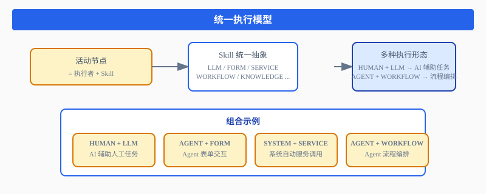
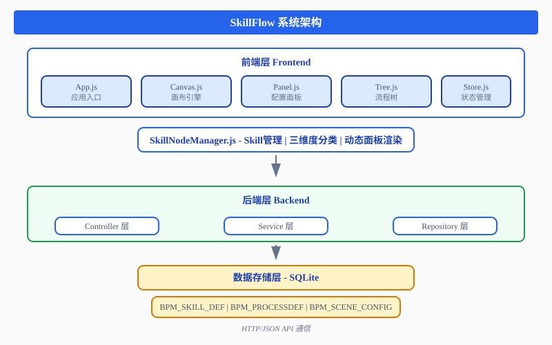
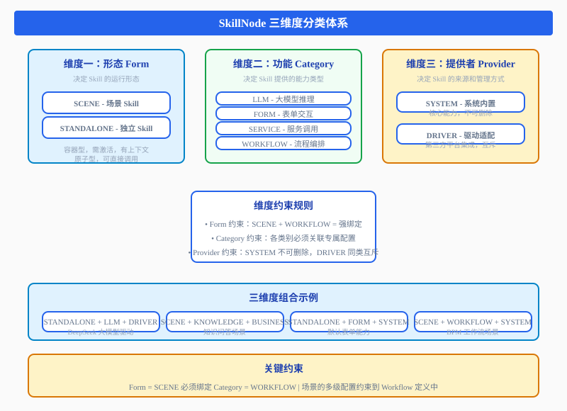
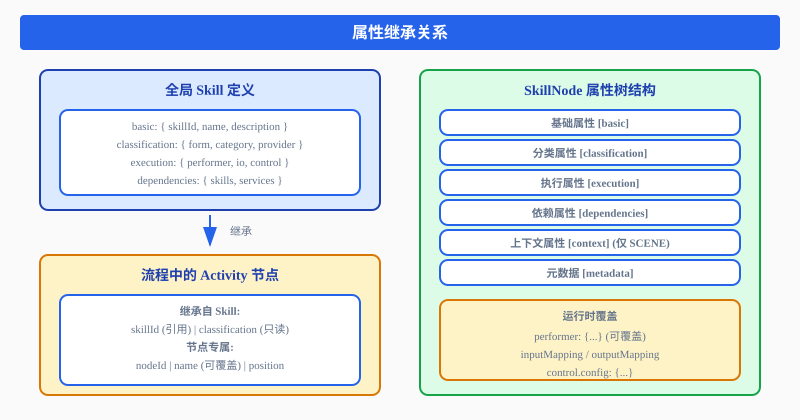
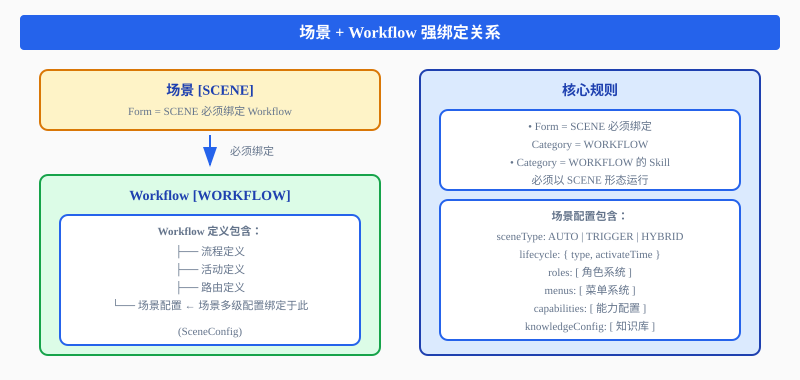
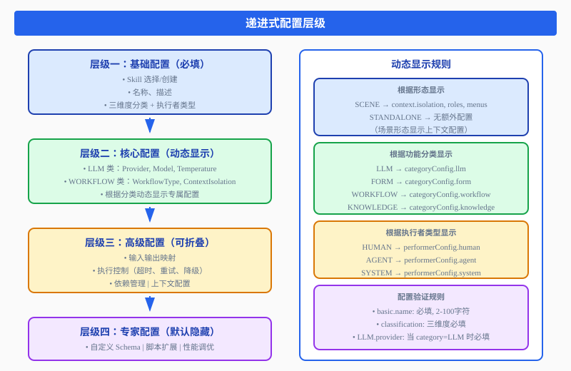
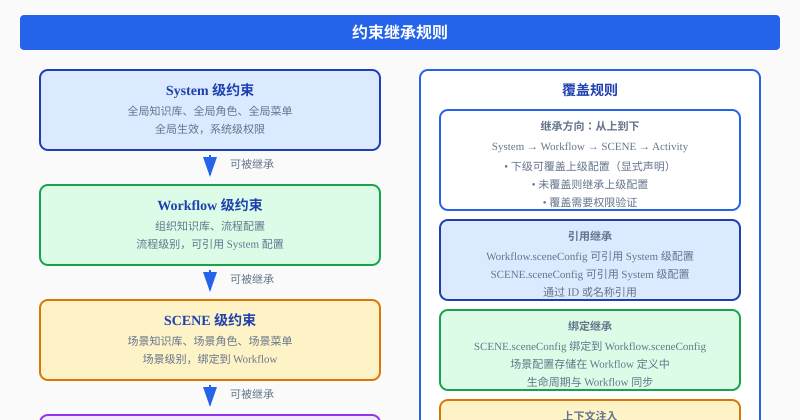

引言
在企业级业务流程管理（BPM）领域，如何将传统的流程引擎与现代的人工智能能力进行深度融合，一直是技术架构演进的核心命题。SkillFlow 正是这一探索的产物——一个基于 Skill（技能）的全新流程编排系统，它重新定义了"执行体"的概念，将 LLM、FORM、SERVICE、WORKFLOW 等各类执行内容统一抽象为 Skill 的不同形态，实现了执行模型的范式统一。
本文将深入解析 SkillFlow 的核心设计理念、系统架构、三维度分类体系、场景与 Workflow 的强绑定机制，以及递进式配置 UI 的交互方案，带你全面了解这一创新性的流程编排框架。
一、核心设计理念
1.1 统一执行模型
传统 BPM 系统通常将"活动"定义为多种类型：人工任务、服务调用、脚本任务、规则任务等。这种多类型的执行模型虽然灵活，但带来了维护复杂、可扩展性差等问题。
SkillFlow 的核心突破在于：所有执行内容都是 Skill 的不同形态。无论是调用大模型进行推理、展示一个表单界面、发起一个 HTTP 请求，还是启动一个子流程，在 SkillFlow 中都统一为对 Skill 的调用。

图1：统一执行模型架构
这种统一模型带来了显著优势：
- 架构简化：无需为每种执行类型维护独立的处理逻辑
- 能力复用：LLM 的能力可以无缝嵌入任何流程节点
- 可扩展性：新增执行类型只需开发新的 Skill 实现
1.2 场景驱动的流程设计
SkillFlow 引入了 Scene（场景） 这一核心概念。场景是业务场景的抽象，代表一个完整的业务流程上下文。与传统流程定义不同，场景与 Workflow 强绑定，实现了业务场景的完整生命周期管理。
场景的核心特征：
- 独立生命周期：激活、暂停、恢复、终止
- 上下文隔离：每个场景拥有独立的变量空间和数据环境
- 角色体系：场景级别的用户角色和权限管理
- 能力注入：场景可以注入特定的 Skill 能力和知识库
二、系统架构设计
2.1 整体架构
SkillFlow 采用经典的分层架构，前端使用原生 JavaScript（无框架依赖），后端基于 Spring Boot 3.x，数据库采用 SQLite。

图2：SkillFlow 系统架构
2.2 模块划分
系统核心模块分为前端、后端和数据三个层面：
前端模块
- skill-manager：Skill 管理模块（SkillSelector、SkillEditor、SkillRegistry）
- panel-system：配置面板系统（四层级：基础/核心/高级/专家）
- classification：三维度分类管理（Form/Category/Provider 选择器）
- context-manager：上下文管理（隔离配置、角色配置、菜单配置）
后端模块
- skill-service：Skill 服务（定义、分类、执行）
- process-service：流程服务（流程定义、活动定义、路由定义）
- scene-service：场景服务（配置、生命周期、绑定）
- context-service：上下文服务（隔离、继承、注入）
三、三维度分类体系
SkillFlow 的核心创新之一是建立了 三维度分类体系，从形态、功能和提供者三个维度对 Skill 进行精确分类。
3.1 维度架构

图3：SkillNode 三维度分类体系
3.2 维度组合矩阵
三个维度的组合定义了每个 Skill 的唯一身份：
| Form | Category | Provider | 典型 Skill | 说明 |
|---|---|---|---|---|
| STANDALONE | LLM | DRIVER | skill-llm-deepseek | DeepSeek 大模型驱动 |
| STANDALONE | FORM | SYSTEM | skill-form-default | 默认表单能力 |
| STANDALONE | SERVICE | DRIVER | skill-im-wecom | 企业微信 IM 驱动 |
| SCENE | KNOWLEDGE | BUSINESS | skill-knowledge-qa | 知识问答场景 |
| SCENE | WORKFLOW | SYSTEM | skill-bpm | BPM 工作流场景 |
| SCENE | WORKFLOW | BUSINESS | skill-approval-form | 审批流程场景 |
3.3 维度约束规则
三个维度之间存在明确的约束关系：
Form 约束
- SCENE 形态必须绑定 Workflow，有独立上下文
- STANDALONE 形态可独立调用，无状态
- SCENE + WORKFLOW = 强绑定关系
Category 约束
- KNOWLEDGE 类必须关联知识库配置
- WORKFLOW 类必须关联流程定义
- FORM 类必须关联表单 Schema
- LLM 类必须关联模型配置
Provider 约束
- SYSTEM：不可删除，不可修改，系统级权限
- DRIVER：同类互斥，需要配置认证信息
- BUSINESS：企业级管理，可配置权限
- USER：个人级管理，可分享给他人
四、SkillNode 属性体系
4.1 完整属性树
SkillNode 采用树形属性结构，清晰组织各类配置：

图4：属性继承关系
4.2 属性继承关系
Skill 定义与活动节点之间存在清晰的继承关系：
- 继承自 Skill：skillId（引用）、classification（只读）、execution.io（可覆盖）
- 节点专属：nodeId、name（可覆盖 Skill 名称）、position、flowControl
- 运行时覆盖：performer、inputMapping、outputMapping
五、场景与 Workflow 强绑定
5.1 强绑定机制
这是 SkillFlow 的另一个核心设计：SCENE 形态必须绑定 WORKFLOW 类别。

图5：场景 + Workflow 强绑定关系
5.2 场景配置结构
场景配置（SceneConfig）包含以下核心部分：
sceneConfig = {
sceneType: AUTO | TRIGGER | HYBRID,
lifecycle: { type, activateTime, expireTime, autoDestroy },
roles: [{ name, description, permissions, minCount, maxCount }],
menus: [{ id, name, icon, url, order, roles, visible }],
capabilities: { skills, capabilities, resources },
activationSteps: [{ stepId, name, required, autoExecute, actions }],
driverConditions: [{ type: CRON | EVENT | CONDITION, config }],
knowledgeConfig: { knowledgeBaseId, embeddingConfig, retrievalConfig }
}六、递进式配置 UI
6.1 四层级设计
SkillFlow 提供了递进式的配置界面，满足从入门到专家的不同层次需求：

图6：递进式配置层级与动态显示规则
6.2 动态显示规则
配置面板根据用户的选择动态显示相关配置项：
- 根据形态显示：SCENE → context.isolation, roles, menus；STANDALONE → 无额外配置
- 根据功能分类显示：LLM → categoryConfig.llm；WORKFLOW → categoryConfig.workflow
- 根据执行者类型显示：HUMAN → performerConfig.human；AGENT → performerConfig.agent
七、多级多维度管理
7.1 管理约束层级
SkillFlow 支持四级管理约束，实现精细化的权限和配置管理：
| 层级 | 管理对象 | 说明 |
|---|---|---|
| System | 全局知识库、全局角色、全局菜单 | 全局生效 |
| Workflow | 组织知识库、流程配置 | 流程级别 |
| Scene | 场景知识库、场景角色、场景菜单 | 场景级别 |
| Activity | 活动知识库、活动配置 | 活动级别 |
7.2 约束继承规则

图7：约束继承规则
八、上下文隔离机制
8.1 隔离级别
对于嵌套节点（子流程、活动块、场景、外部流程），SkillFlow 提供了三级上下文隔离：
| 隔离级别 | 说明 | 适用场景 |
|---|---|---|
| SHARED | 共享父上下文 | 普通活动块 |
| PARTIAL | 部分隔离 | 子流程 |
| ISOLATED | 完全隔离 | 场景、外部流程 |
8.2 隔离配置项
contextIsolation = {
level: SHARED | PARTIAL | ISOLATED,
variableIsolation: {
inheritParent: boolean,
exposeLocal: boolean
},
dataIsolation: {
inheritFormData: boolean,
shareLocalData: boolean
},
permissionIsolation: {
inheritPermissions: boolean,
localPermissions: [...]
}
}九、实现度与开发计划
9.1 当前实现度
根据最新分析，SkillFlow 整体实现度约为 40%：
| 模块 | 实现度 | 说明 |
|---|---|---|
| 流程定义管理 | 100% | 已完成 |
| 活动节点管理 | 70% | 需新增 Skill 引用 |
| 路由管理 | 100% | 已完成 |
| 画布引擎 | 100% | 已完成 |
| Skill 定义管理 | 0% | 待开发 |
| 场景配置管理 | 0% | 待开发 |
| 上下文隔离管理 | 0% | 待开发 |
| 配置面板系统 | 30% | 需重构为递进式 |
9.2 开发计划
阶段一：基础架构（P0）
- 数据库 Schema 设计
- 枚举类定义
- Skill 定义 API
- 三维度分类前端
- 基础配置面板
阶段二：核心功能（P0）
- 场景配置 API
- 场景绑定服务
- 核心配置面板
- 分类专属插件
- 活动节点属性迁移
阶段三：高级功能（P1）
- 上下文隔离 API
- 隔离配置面板
- 高级配置面板
- 验证规则引擎
阶段四：完善优化（P2）
- 专家配置面板
- 性能优化
- 单元测试
十、总结
SkillFlow 代表了 BPM 系统的一次重要进化。通过将所有执行内容统一抽象为 Skill，它简化了架构、提升了可扩展性；三维度分类体系提供了精确的能力分类；场景与 Workflow 的强绑定实现了业务场景的完整生命周期管理；递进式配置 UI 则满足了不同层次用户的需求。
虽然当前实现度为 40%，但核心框架已经清晰，各个模块的开发路线图也已经明确。随着后续功能的逐步完善，SkillFlow 将成为企业级流程编排的有力工具。